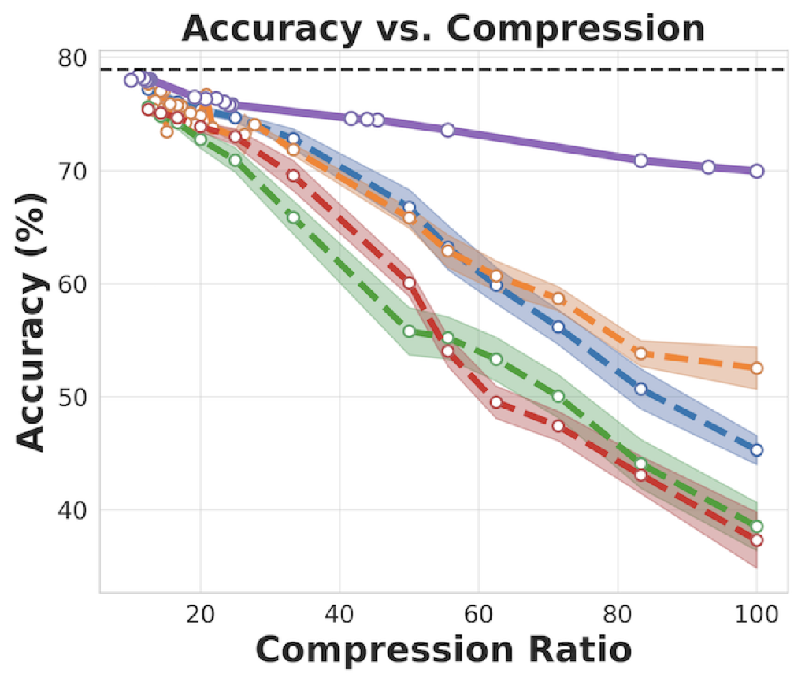
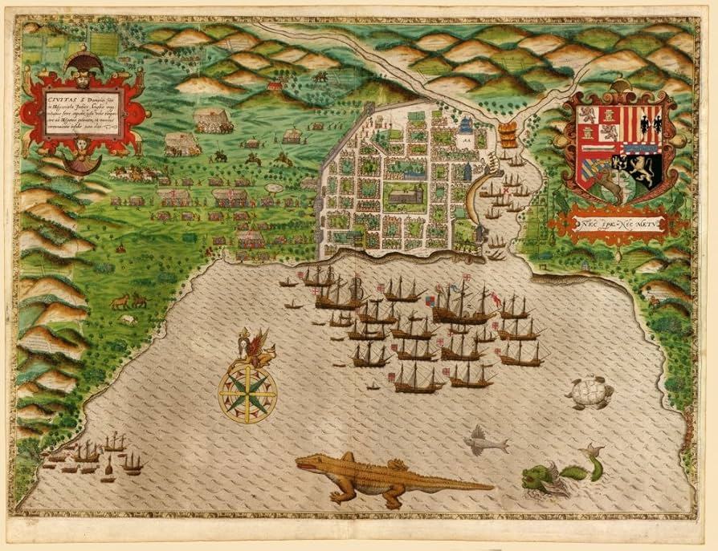
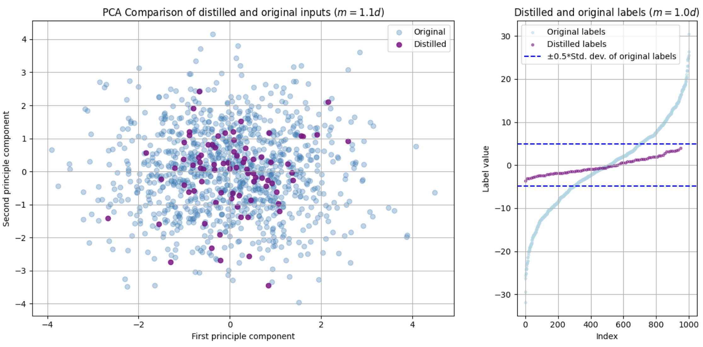
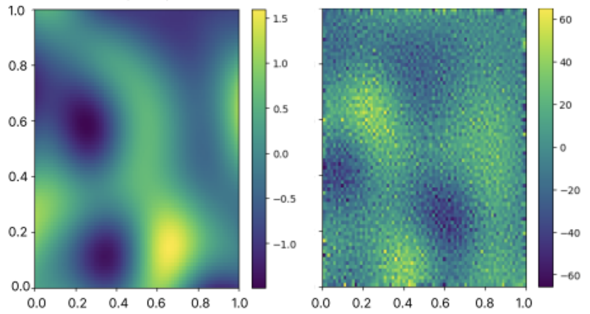
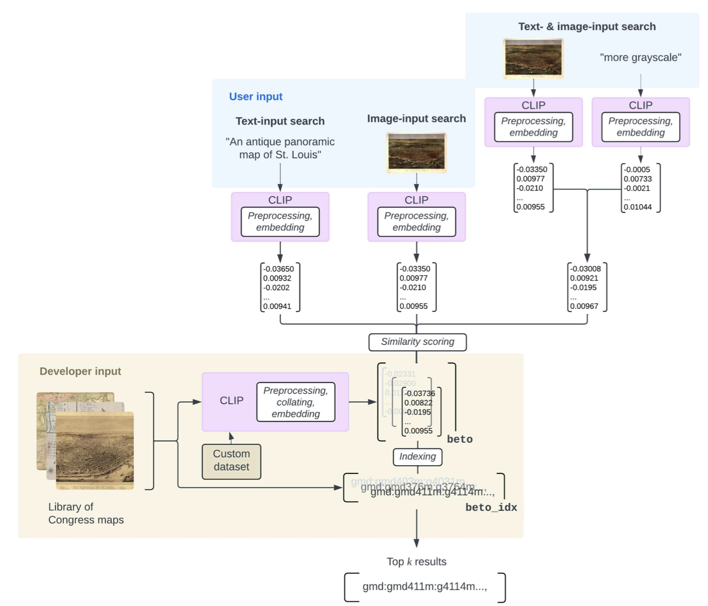

|
Jamie Mahowald Hi! I'm an incoming PhD student at NYU Courant. I'm currently a post-bachelor student researcher at Los Alamos National Laboratory, and I recently graduated as a mathematics student in the Plan II honors program at the University of Texas at Austin. Before that, I worked at ARL:UT, the Oden Institute, and the Library of Congress's John W. Kluge Center. My research interests include mathematical theory in machine learning, ML for scientific computing, and AI for cultural institutions. Outside research, I like reading history, exploring northern New Mexico, and singing. CV | Google Scholar | Github | Blog |

|
Projects |
|  |
Efficient Analysis of the Distilled Neural Tangent Kernel
Jamie Mahowald, Brian Bell, Alex Ho, Michael Geyer arXiv, 2026 |
|  |
Retrieval-Augmented Search for Large-Scale Map Collections with ColPali
Jamie Mahowald, Benjamin Lee ACM SIGIR Conference on Human Information Interaction and Retrieval, 2025 MapRAS |
|  |
Toward Dataset Distillation for Regression Problems
Jamie Mahowald, Ravi Srinivasan, Atlas Wang Efficient Systems for Foundation Models, ICML workshop, 2025 Senior thesis |
|  |
Generalization Limits of In-Context Operator Networks for Differential Equations
Jamie Mahowald, Tan Bui In review, 2024 |
|  |
Integrating visual and textual inputs for searching large-scale map collections with CLIP
Jamie Mahowald, Benjamin Lee Computational Humanities Research (🎖️ Best Long Paper), 2024 |